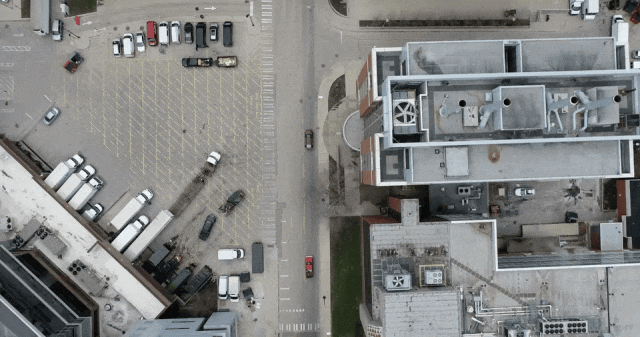
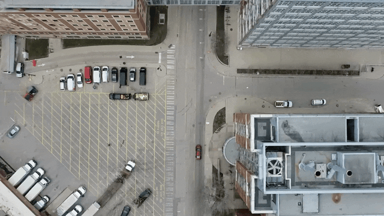
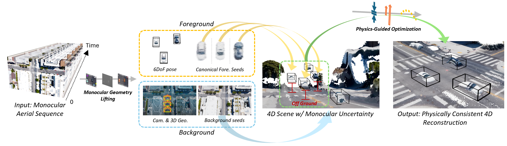

Original video

Dynamic 3DGS using our AeroDGS modeling
Recent advances in 4D scene reconstruction have significantly improved dynamic modeling across various domains. However, existing approaches remain limited under aerial conditions with single-view capture, wide spatial range, and dynamic objects of limited spatial footprint and large motion disparity. These challenges cause severe depth ambiguity and unstable motion estimation, making monocular aerial reconstruction inherently ill-posed. To this end, we present AeroDGS, a physics-guided 4D Gaussian splatting framework for monocular UAV videos. AeroDGS introduces a Monocular Geometry Lifting module that reconstructs reliable static and dynamic geometry from a single aerial sequence, providing a robust basis for dynamic estimation. To further resolve monocular ambiguity, we propose a Physics-Guided Optimization module that incorporates differentiable ground-support, upright-stability, and trajectory-smoothness priors, transforming ambiguous image cues into physically consistent motion. The framework jointly refines static backgrounds and dynamic entities with stable geometry and coherent temporal evolution. We additionally build a real-world UAV dataset that spans various altitudes and motion conditions to evaluate dynamic aerial reconstruction. Experiments on synthetic and real UAV scenes demonstrate that AeroDGS outperforms state-of-the-art methods, achieving superior reconstruction fidelity in dynamic aerial environments.

Overview of the proposed AeroDGS. Given a monocular aerial sequence, AeroDGS introduces a Monocular Geometry Lifting module to reconstruct scene geometry and separate dynamic foreground from static background. The recovered seeds are composed and jointly optimized in a unified Gaussian representation. A Physics-Guided Optimization module is proposed to resolve pose ambiguity of dynamic objects under monocular settings, ensuring physically consistent 4D reconstruction.
(a) Input aerial sequence (Downtown-High).
(b) Rendered video from our reconstructed model (Downtown-High).
(c) Input aerial sequence (Intersection-Day).
(d) Rendered video from our reconstructed model (Intersection-Day).